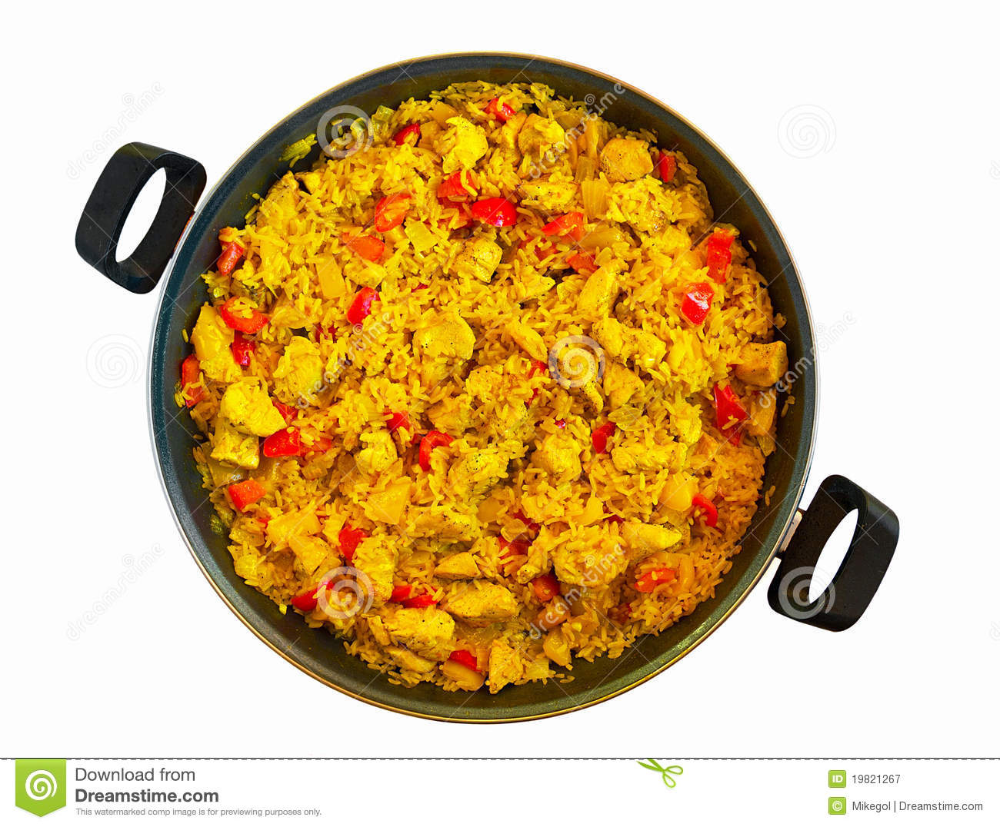

Inici
Sobre mi
Receptes
Contacte
Altres coses
Poella
Ingredients
Arrós
Pollaastre
Pebrot
Caldo de pollastre
Sal
Quantitat
300g
200g
100g
1l
al gust

Temps de preparació
15min
Racions
4
Preparació
Pas 1
Possem a bullir l'aigua i afegim un grapat de sal.
Pas 2
Fiquem l'arrós durant 15 minuts.
Pas 3
Fem el pollastre a la plancha.
Pas 4
Treiem l'arros i emplatem.